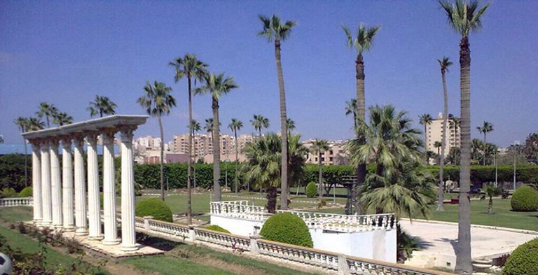
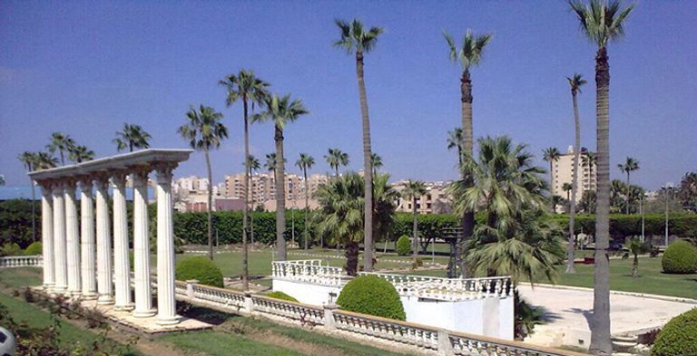
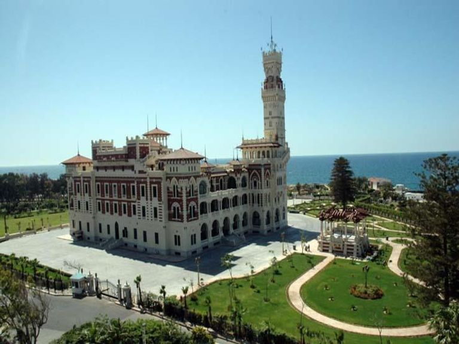
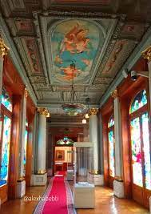
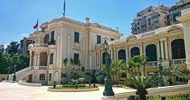
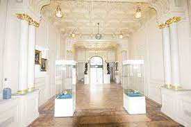
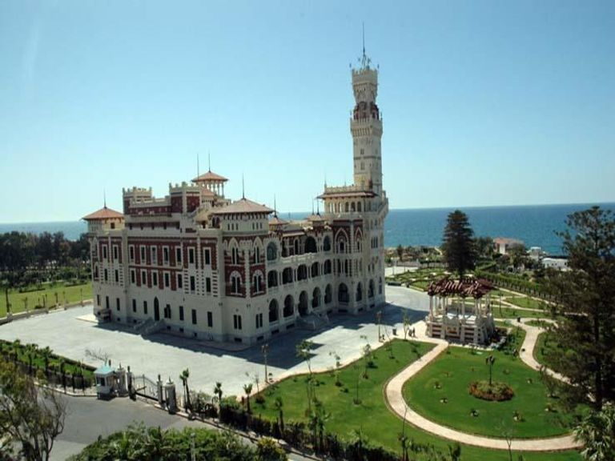
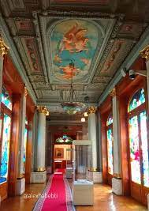
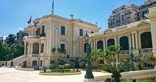
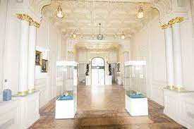

Alexandria is the second capital of Egypt and was its capital in the past. It is the capital of the Alexandria Governorate and its largest city. It is located on the coast of the Mediterranean Sea. Alexandria includes among its folds many distinctive landmarks, as it has the largest Egyptian seaports, and it also includes many museums such as the Aquarium and archaeological sites. Like Qaitbay Castle, Amoud al-Sawary, and others, Alexandria is divided into nine administrative districts: the first district of Al-Montaza, the second district of Al-Montazah, the eastern district, the middle district, the western district, the customs district, the Al-Ajami district, the first district of Al-Ameriya, and the second district of Al-Amiriya


 

 






